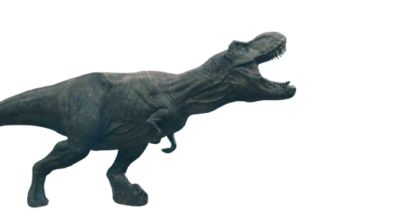
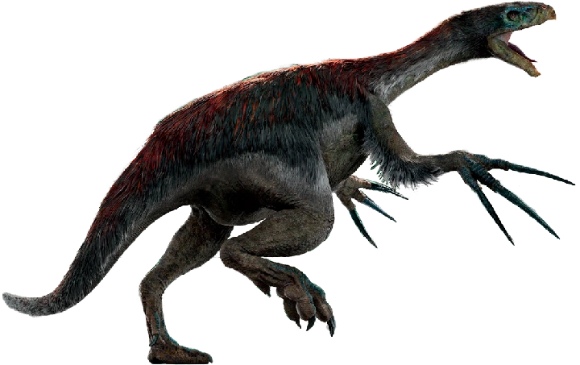
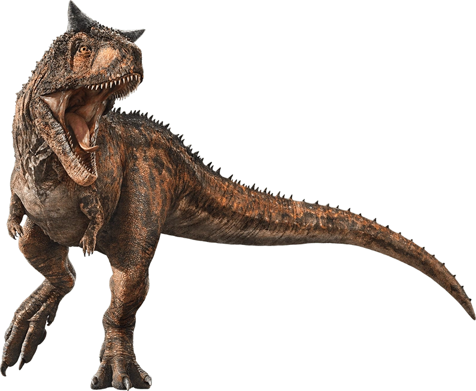
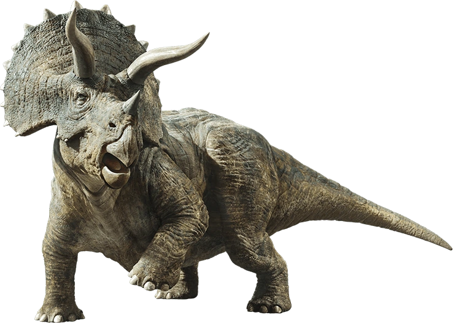

Curiosidade sobre os Dinossauros
Sobre os Dinossauros
1. Origem e Evolução
Primeiros Dinossauros:Os dinossauros surgiram no início do período Triássico, cerca de 230 milhões de anos atrás.
Diversificação: Ao longo dos períodos Triássico, Jurássico e Cretáceo, os dinossauros se diversificaram e se espalharam por toda a Terra, ocupando uma ampla gama de ambientes.
2. Anatomia e Características
Tamanho: Os dinossauros variavam de tamanhos pequenos, como o Compsognathus que era do tamanho de um frango, até gigantes como o Argentinossauro, que poderia atingir 30 metros de comprimento.
Estrutura Corporal: Alguns dinossauros tinham pescoços longos e caudas longas, enquanto outros possuíam corpos mais compactos, com membros adaptados para caçar ou correr rapidamente.
Cores e Penas: Muitos dinossauros, especialmente os carnívoros do grupo Theropoda(como T-Rex), possuíam penas. Acredita-se que a cor e o padrão das penas variavam, o que ajudava na camuflagem ou exibição de comportamento.
3.Comportamento e Alimentação
Herbívoros vs Carnívoros:Alguns dinossauros eram herbívoros, alimentando-se de plantas, enquanto outros eram carnívoros, caçando outros animais. Por exemplo, o T-Rex era um carnívoro, e o Triceratops era herbívoro.
Estratégias de Defesa: Muitos herbívoros, como o Estegossauro, tinham espinhos ou placas nas costas como defesa contra predadores. Outros, como os , possuíam caudas massivas, semelhantes a maças, para se defender.
4.Dinossauros mais legais e letais
Tyrannosaurus rex (T. rex): È um dos dinossauros mais famosos e temidos da história da paleontologia. Ele viveu durante o período Cretáceo, há cerca de 68 a 66 milhões de anos, e é considerado um dos maiores predadores terrestres de todos os tempos.
Triceratops: Um dinossauro herbívoro com três chifres e uma grande "gola" óssea atrás da cabeça.
Terezinossauro: Um dinossauro herbívoro que viveu durante o final do período Cretáceo, há cerca de 70 milhões de anos, é famoso por suas garras extremamente longas, que podiam alcançar até 1 metro de comprimento. Ele pertence ao grupo dos terópodes, mas, ao contrário da maioria dos seus parentes, que eram carnívoros
Espinossauro: È um dos dinossauros mais impressionantes e enigmáticos já descobertos. Ele viveu durante o período Cretáceo, entre cerca de 112 a 93 milhões de anos atrás, e é famoso por seu tamanho colossal e características únicas
Carnotauro: È um dinossauro carnívoro que viveu durante o período Cretáceo, aproximadamente entre 72 e 69 milhões de anos atrás, na região que hoje corresponde à América do Sul, mais especificamente na Argentina. Ele é um dos dinossauros terópodes mais conhecidos por suas características anatômicas únicas e intrigantes.
5.Paleontologia
Descobertas: A ciência que estuda os dinossauros é a paleontologia. Cientistas desenterram fósseis de dinossauros em todo o mundo, e essas descobertas ajudam a entender mais sobre sua aparência, comportamento e evolução.
Fósseis: A fossilização ocorre quando os restos de um organismo, como ossos, dentes e pegadas, são preservados em sedimentos ao longo de milhões de anos. Alguns dinossauros têm fósseis extremamente bem preservados, incluindo impressões de pele e penas.
6. Curiosidade curiosa
Maior Dinossauro: O maior dinossauro conhecido até hoje é o Argentinossauro, um sauropode que poderia atingir até 30 metros de comprimento.
Menor Dinossauro:O menor dinossauro conhecido é o Compsognathus, que tinha cerca de 1 metro de comprimento e pesava apenas 2,5 kg.
"Mistério das Plumas": A descoberta de penas nos fósseis de dinossauros, como o Archaeopteryx, revolucionou a nossa compreensão de que as aves evoluíram de dinossauros.
Sobre as Eras dos Dinossauros
Era Triássica:
A Época Triássica foi o primeiro período da era Mesozoica, ocorrendo aproximadamente entre 252 a 247 milhões de anos atrás. Esse período é conhecido por ser um tempo de grandes mudanças, tanto geológicas quanto biológicas, após a extinção em massa no final do período Permiano, que quase dizimou a vida na Terra.
1. Geografia e clima: No início da Triássica, os continentes ainda estavam unidos formando o supercontinente Pangeia. O clima era predominantemente quente e seco, com vastas áreas de desertos. A separação de Pangeia começou no final do Triássico, iniciando a formação de novos oceanos e continentes.
2. Vida vegetal: Durante essa época, as plantas dominantes eram as gimnospermas como as coníferas e as samambaias. As florestas de gimnospermas eram típicas, com plantas como Araucárias e Cicadáceas.
3. Vida animal: A fauna triássica foi marcada pelo surgimento dos primeiros dinossauros, que dominaram a Terra durante o Mesozoico. Os dinossauros começaram a se diversificar no final do Triássico, mas também existiam outros grupos importantes, como os répteis marinhos como os ictiossauros e plesiossauros e os terapsídeos.
Era Jurássica:
4. Extinções e evolução: O período Triássico também foi uma época de grande evolução. Após a extinção em massa no final do Permiano, novos grupos de animais começaram a se diversificar, como os primeiros dinossauros e mamíferos. No entanto, o Triássico também terminou com outra extinção significativa no final do período, que abriu caminho para a dominância dos dinossauros durante o Jurássico.
5. A Era Jurássica, que durou aproximadamente de 201 milhões a 145 milhões de anos, é a segunda das três divisões principais do período Mesozoico, entre o Triássico e o Cretáceo. Durante essa era, o clima era mais quente e úmido, e os continentes estavam se afastando, formando oceanos e mares intern
6. O principal evento da Era Jurássica foi a evolução e a diversificação dos dinossauros. Os primeiros dinossauros herbívoros e carnívoros se tornaram mais diversos, com algumas espécies como o Apatossauro, o Brachiossauro, o Estegossauro e o Alossauro dominando o planeta. Além disso, outros grupos de animais, como os primeiros mamíferos e aves, também começaram a aparecer.
7. Nos mares, grandes répteis como os ichthyosaurs e os plesiossauros eram predominantes. As plantas também passaram por grandes mudanças, com o aparecimento de florestas de gimnospermas como coníferas, mas as primeiras angiospermas plantas com flores, começaram a surgir no final da era.
Era Cretácea:
8. A Era Jurássica é marcada por uma abundância de vida, tanto terrestre quanto marinha, e foi um período crucial para o desenvolvimento da fauna que dominaria a Terra até o fim do Cretáceo.
9. A Era Cretácea foi a última fase do período Mesozoico, ocorrendo entre aproximadamente 145 milhões e 66 milhões de anos atrás. Foi uma era de grandes transformações geológicas, climáticas e biológicas, marcada pelo auge e pela extinção dos dinossauros.
10. Durante o Cretáceo, os continentes continuaram a se afastar, formando os oceanos modernos e novos mares internos, o que contribuiu para a criação de diferentes ecossistemas. O clima era mais quente e úmido, o que favoreceu a proliferação de plantas e animais.
11. Os dinossauros continuaram a dominar tanto os ambientes terrestres quanto marinhos. Alguns dos dinossauros mais famosos dessa época incluem o Tiranossauro rex, o Triceratops, o Velociraptor, o Espinossauro e o Hadrossauros. Além disso, os dinossauros herbívoros, como os diplodocos e anquilossauro que tinha uma armadura para se proteger de predadores.
Galeria dos Dinassouros




